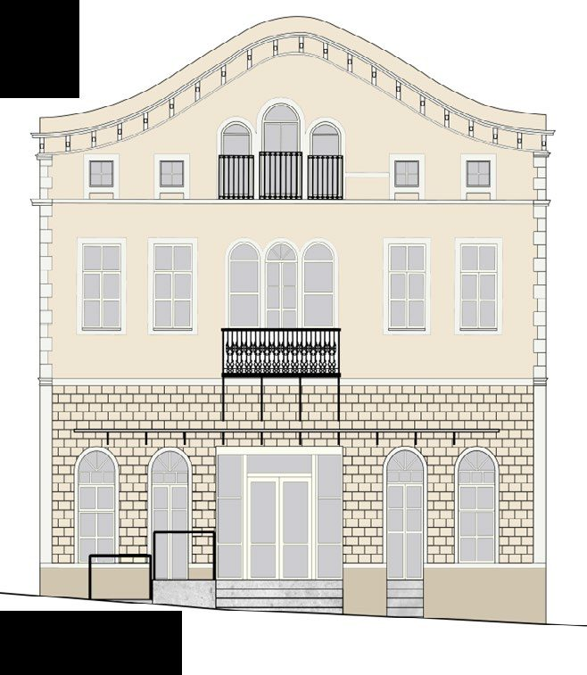
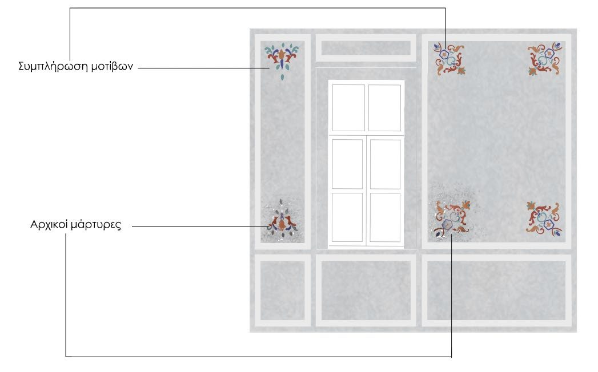
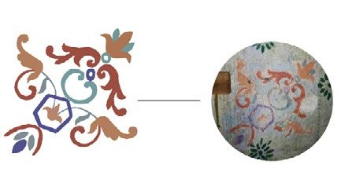
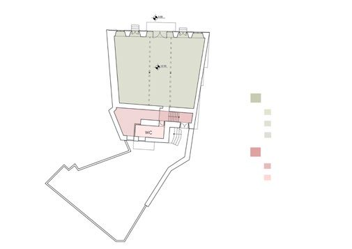
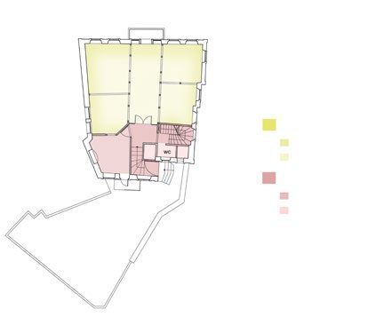
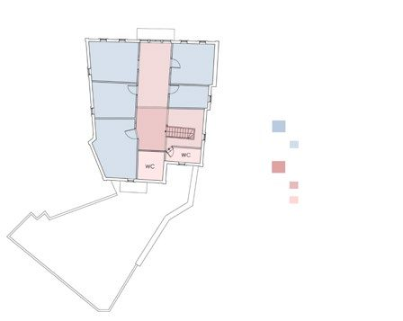
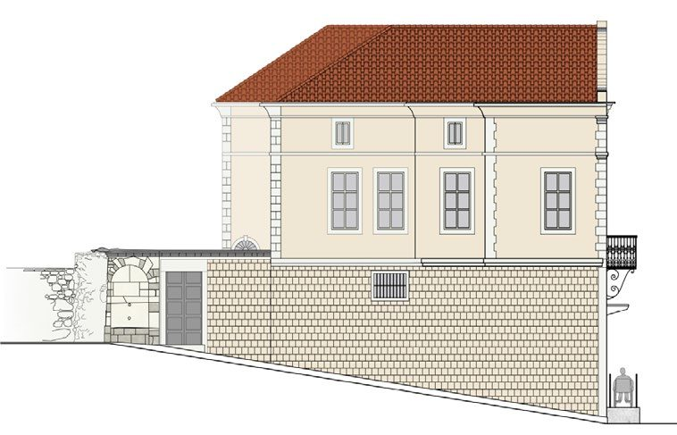
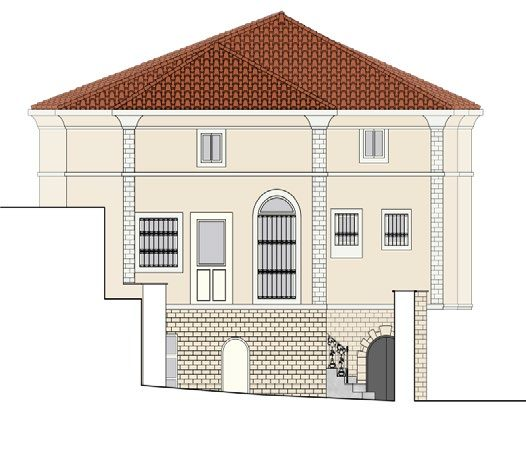
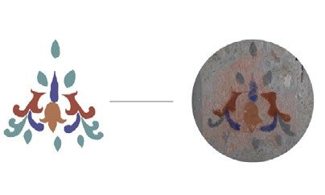

Principles of Intervention
In restoring, adapting, and reactivating the historic building under study, the design approach prioritizes both the preservation of its historical and aesthetic value and its adaptation for contemporary use. The interventions were guided by a rigorous evaluation of the building's architectural integrity and its intended new functions.
Selective reversal of alterations: removing or correcting modifications that detract from the building's authenticity. Historical conservation: retaining significant features, including later valuable additions, to preserve identity. Targeted restoration: partially restoring original typology, form and materials. Balanced interventions: bold changes where permissible, restraint where required. Modern adaptation: reconfiguring spaces to meet contemporary urban and visitor needs. Contrasts in design: highlighting the dynamic interplay between historical preservation and modern requirements.
Programmatic objectives
This approach to intervention respects the building's historical fabric while thoughtfully integrating new functions, resulting in a sensitive yet dynamic reactivation that honors its heritage while ensuring relevance for the future.
The proposed restoration and adaptive reuse address community needs for accessible gathering spaces and essential storage. The first-floor library will offer a rich resource of materials and a tranquil study environment, while the attic studios create specialized workspaces that respond to current overcrowding issues in the Architecture Department, where temporary design studios have been set up in general classrooms.



New uses
Ground floor: dedicated to a printing and laser area, materials storage, cafeteria, general storage, and restroom facilities.
First floor: designed as a library with an extensive selection of books for reading and borrowing, complemented by a study area, a self-contained kitchen, and restrooms.
Attic: envisioned as a series of design studios for individual, group, and thesis work, along with a rest area to accommodate the significant hours students spend in studio work.








